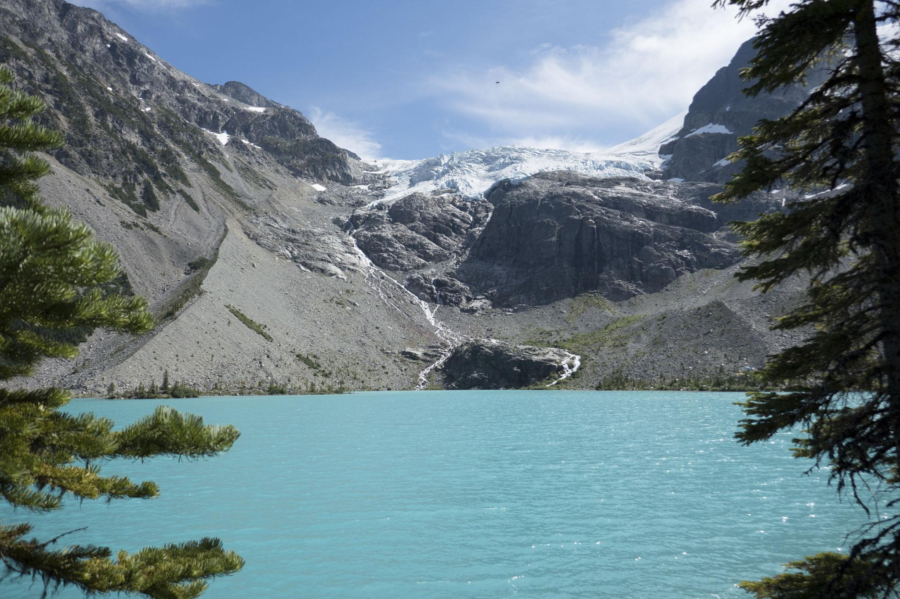

← 모레인 호수
🥾 Consolation Lakes
Moraine Lake
⭐ 빙하와 고요한 호수를 만나는 힐링 트레킹

📅 우리 일정
Day 3 오전 (시간과 체력 여유 시 선택)
🏞 기대 풍경
🏔 Quadra Glacier
💎 고요한 Consolation Lakes
🪨 거대한 빙하가 남긴 암석 지대
🌲 울창한 침엽수 숲
📸 한적한 로키 자연 풍경
📏 기본 정보
🚶 걷는 거리
왕복 약 5.8km
⏱ 걷는 시간
약 2~2.5시간
💪 난이도
보통
📈 고도차
약 65m
🚻 편의시설
✔ 화장실 (모레인 호수 주차장)
✔ 셔틀 승·하차장
✔ 카누 대여소
✖ 트레일 내부 편의시설 없음
🎒 준비물
👟 트레킹화 또는 접지력 좋은 운동화
💧 물 500ml 이상
🧥 바람막이
🐻 곰 스프레이 (권장)
💡 여행 Tip
✔ Rockpile Trail을 지나 계속 걸으면 Consolation Lakes로 이어집니다.
✔ 비교적 평탄하지만 바위 구간이 있어 발밑을 잘 살펴 걸어야 합니다.
✔ 호수 주변은 매우 조용하여 로키의 자연을 여유롭게 감상하기 좋습니다.
✔ 곰이 활동하는 지역이므로 가능하면 여러 명이 함께 이동하는 것이 좋습니다.
📍 Google Maps
🗺 트레일 지도
← 모레인 호수